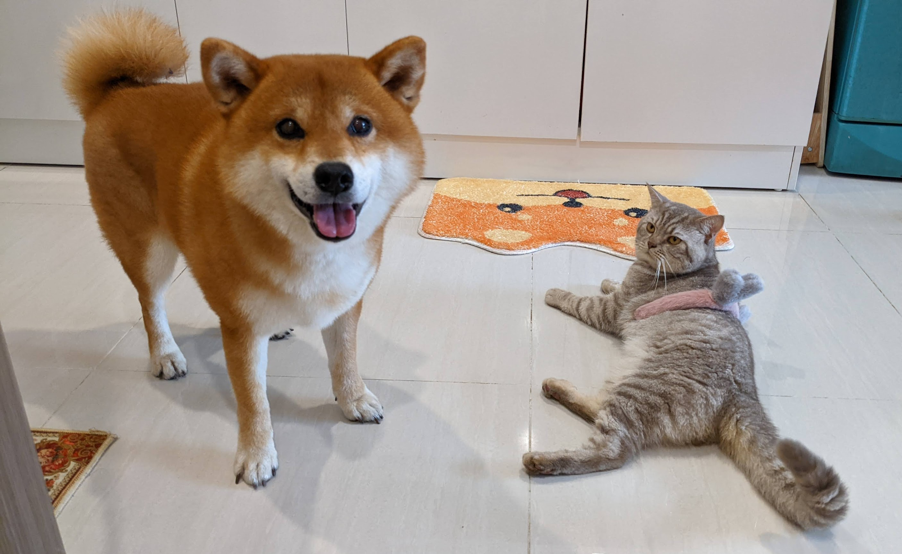

Bơ, và hành trình đến xứ sở cờ hoa
(Cùng chị Shibe và anh Oong 💑)
🔖 A short English version HERE

* Nội dung *
🙆🏻 Bài viết này dành cho Bơ - Chiếc chó ngu ngốc không biết chị chủ của mình đã vất vả thế nào để đưa mình qua Mỹ. (Và Mắm, một chiếc mèo đơn giản bước qua đất Mỹ, như thể mình là công dân Mỹ từ lâu…)
Bài viết sẽ gồm 03 phần chính: (I) Sơ lược các bước Vận chuyển chó/ mèo đi nước ngoài (II) Chi tiết hành trình đi Mỹ của Bơ (III) Chi tiết hành trình đi Mỹ của Mắm

I - Sơ lược về Vận chuyển chó/ mèo đi nước ngoài
Phần này, mình tóm lược 6 bước cho quá trình vận chuyển thú cưng đi nước ngoài (Theo kinh nghiệm cá nhân của mình). Vận chuyển chó/ mèo đi nước ngoài bằng đường hàng không thường có 2 dạng chính:
- (A) Bay cùng người: Bạn và thú cưng bay trên cùng một chuyến bay. Các bé sẽ đi dạng hành ký ký gửi hoặc xách tay.
- (B) Bay không kèm người: Bạn và thú cưng không bay trên cùng một chuyến bay. Các bé là một “gói hàng".
Trong cả bài viết này, mình chỉ đề cập đến trường hợp (A) Bay cùng người. Nếu các bạn muốn vận chuyển chó/ mèo kiểu (B), hãy liên hệ với các công ty/ đơn vị vận chuyển thú cưng xuyên quốc gia nhé! Sáu (06) bước Vận chuyển chó/ mèo đi nước ngoài
1- Bạn có thực sự muốn mang (những) người bạn bốn chân này đi? Tưởng chừng như một câu hỏi rất đơn giản (Có/ Không). Nhưng mình thực lòng khuyên bạn nên suy nghĩ thật kỹ. Có thể có nhiều phương án khác tốt hơn cho thú cưng (Nhờ người nuôi hộ; Tìm chủ mới cho bé; v.v). Còn nếu, bạn thực sự muốn mang (các) bé đi cùng, thì hãy chuẩn bị tâm lý thật tốt cho những khó khăn phía trước nhé! (haha!)
2- Lên kế hoạch Lên kế hoạch thật sớm, ngay lúc bạn có ý định đi nước ngoài. Trong quá làm thủ tục giấy tờ, có thể có rất nhiều khó khăn, hoặc có những bước phải chờ đợi lâu đến 1-1.5 tháng. Vì vậy, hãy luôn lên kế hoạch thật sớm, để có nhiều thời gian chuẩn bị nhé.
3- Tìm hiểu quy định nhập cảnh tại nước đến Mỗi nước sẽ có quy định nhập cảnh đối với chó/ mèo riêng. Các thông tin này, tốt nhất bạn nên tìm hiểu ở website của Đại sứ quán, Trung tâm kiểm soát dịch bệnh (CDC), Bộ Nông nghiệp, v.v… của nước bạn đi. Bạn có thể bắt đầu bằng cách tìm Google: “importing dog/ cat into the us”, rồi chọn các website “chính chủ”/ chính thức để đọc nhé. Đừng đọc trên các website đăng lại, vì thông tin có thể không đúng, hoặc ít được cập nhật.

4- Chọn hãng bay Không phải hãng bay nào cũng chấp nhận vận chuyển thú cưng. Bạn cần kiểm tra thông tin cụ thể trên website của hãng, hoặc email/ gọi điện hỏi hãng. Các hãng chấp nhận bay cũng có quy định riêng về giấy tờ cần chuẩn bị, hay quy định quá cảnh tại nước thứ 3 (nếu có). Bạn nên tìm kiếm Google: “travel with pets [tên hãng bay]" nhé.
Ví dụ:
- Vietnam Airlines: https://www.vietnamairlines.com/vn/en/travel-information/baggage/special-baggage/petc-popup
- Qatar Airways: https://www.qatarairways.com/en-us/baggage/animals.html
- v.v
5- Các quy định xuất cảnh tại Việt Nam Để xuất cảnh tại Việt Nam, bạn cần xin Giấy chứng nhận Kiểm dịch Động vật Xuất khẩu, được cấp tại Chi cục thú y vùng/ khu vực bạn sinh sống.
6- Bay Sau khi chuẩn bị đầy đủ các giấy tờ, bạn cần mang thú cưng ra sân bay và… bay thôi ✈️!
Tuỳ thuộc vào việc các bé thú cưng bay dạng ký gửi (checked baggage), hay xách tay (carry-on), mà bạn có thể chọn lồng vận chuyển phù hợp. Bạn cũng cần để ý các điều kiện của nước quá cảnh (nếu có), và các giấy tờ cần điền lúc nhập cảnh (nếu có).
II - 🥑 Bơ-đi-Mỹ 🇺🇸
Phần này mình sẽ nói về quá trình mình đưa Bơ qua Mỹ, tương ứng với (6) bước trên, bỏ bước (1 và 2) (1) Xin giấy phép nhập cảnh phía Mỹ (2) Xin giấy tờ xuất cảnh phía Việt Nam (3) Chọn hãng bay (4) Hành trình bay (5) Nhập cảnh/ Khai báo hải quan vào Mỹ (6) Tham khảo: Chi phí
1 - Xin giấy phép nhập cảnh phía Mỹ (CDC Dog Import Permit)
Bất kể động vật nào khi muốn nhập cảnh vào Mỹ đều phải tuân thủ theo các quy định của CDC. Khi mình viết bài viết này, CDC đang hạn chế nhập cảnh chó từ hơn 100 quốc gia có nguy cơ dại cao (high-risk country for dog rabies), trong đó có Việt Nam.
Trong một số trường hợp, Mỹ chấp nhận nhập cảnh chó với một số điều kiện đi kèm. (Tham khảo các điều kiện tại: https://www.cdc.gov/importation/bringing-an-animal-into-the-united-states/dogs.html).
Trong trường hợp của Bơ, Bơ chỉ có thể vào Mỹ bằng cách xin được Giấy phép nhập cảnh (CDC Dog Import Permit) trước khi bay.
(1.1) Chuẩn bị giấy tờ:
Mình tiêm vaccine dại, test kháng nguyên, và gắn microchip cho Bơ (và Mắm) đều tại Gaia Pet Clinic & Resort.
- Các giấy tờ CDC yêu cầu được nêu rõ và cập nhật theo thời gian tạiHow to Apply for a CDC Dog Import PermitCDC has the authority to issue a CDC Dog Import Permit to bring in 1 or 2 dogs from a high-risk country for dog rabies. Permits will be issued only for dogs that were vaccinated against rabies in a foreign country. Dogs with current valid US issued rabies vaccination certificates do not need a permit.
https://www.cdc.gov/importation/bringing-an-animal-into-the-united-states/apply-dog-import-permit.html
- Các giấy tờ mình xin cho Bơ để nộp xin Permit: BO - CDC Dog Import Permit - Document - Google Drive
 https://drive.google.com/drive/folders/1k4AKPZQpZW801G8DlOpfNMkpse6drKlJ?usp=sharing
https://drive.google.com/drive/folders/1k4AKPZQpZW801G8DlOpfNMkpse6drKlJ?usp=sharing

{kind=link}
(1.2) Nộp xin permit: Mình xin nộp đơn xin online ngày 3 tháng 6, và nhận lại kết quả ngày 8 tháng 7 (Hơn một tháng chờ đợi!).

Với giấy phép này, Bơ có thể nhập cảnh tại 18 cảng hàng không nằm trong danh sách cho phép của CDC. Nhà mình chọn O’Hare, sân bay ở Chicago vì nó gần với Madison nhất!
2 - Xin giấy tờ xuất cảnh phía Việt Nam
Để chuẩn bị cho ngày bay, mình cần phải xin thêm Giấy kiểm dịch động vật (Từ Chi cục Thú y), và Giấy chứng nhận sức khoẻ (Từ phòng khám thú y).
Giấy kiểm dịch
CHI CỤC THÚ Y VÙNG I: Số 50 ngõ 102 đường Trường Chinh - Đống Đa - Hà Nội
Trước khi bay 10 ngày, mình lên Chi cục Thú y vùng I để xin Giấy này. Khi đi PHẢI mang chó/ mèo đi để cán bộ kiểm tra ạ. Họ sẽ quét microchip của các bé.

Khi đi, mình chuẩn bị các bản photo:
- Hộ chiếu của bạn
- Visa của bạn (nếu có)
- Sổ theo dõi sức khoẻ/ sổ tiêm của chó mèo
Các giấy tờ này sẽ được nộp để cán bộ lưu hồ sơ. Hôm đó, anh cán bộ lấy luôn cả bản photo CDC Dog Import Permit của mình.
Mình cũng nộp đơn xin theo mẫu (bạn có thể nhờ cán bộ in giúp, hoặc xin bản mềm của đơn này để để tự đánh máy).
Xong xuôi, mình về nhà và đợi. Ngay ngày hôm sau, mình lên lại, nộp tiền kiểm dịch và lấy giấy kiểm dịch. (Bạn nên chủ động hỏi anh cán bộ cho lịch hẹn để lên lấy nhé!)
Giấy chứng nhận sức khoẻ
Giấy này đảm bảo chó/ mèo của mình đủ điều kiện sức khoẻ để bay. Mình mang chó/ mèo đến phòng khám Gaia để kiểm tra. Giấy này phòng khám cho thể cấp trong ngày luôn.
3 - Chọn hãng bay
Không phải hãng hàng không nào cũng chịu vận chuyển thú cưng, và… Mỗi hãng hàng không/ một nước quá cảnh lại có một quy định về vận chuyển thú cưng riêng!
Mình đã gọi điện, email… cho gần như tất cả các hãng hàng không có chuyến bay từ HN - Chicago…
Qatar Airways, ANA, Singapore Airlines, China Airlines, JAL, Cathay Pacific, Vietnam Airlines, Delta, United, Emirates, Korean Air, và American Airlines.
Cuối cùng, mình lựa chọn tin tưởng ANA của Nhật Bản. Một phần nữa vì Nhật Bản không có quy định gì cho chó/ mèo quá cảnh tại nước này.
ANA chấp nhận vận chuyển thú cưng dạng hành lý ký gửi (Có nghĩa là bay cùng chuyến với mình, nhưng chó/ mèo sẽ ở khoang hành lý).
Để đặt chỗ, bạn gọi lên tổng đài ANA nhé!
4 - Hành trình bay
3.1. Check-in ở sân bay Nội Bài
Mình đến sân bay sớm hơn giờ bay 4h. Vì mình đi cùng thú cưng, nên sẽ được ra quầy làm thủ tục riêng. Hãng bay sẽ in và yêu cầu mình ký Giấy miễn trừ trách nhiệm (Giấy này ý là hãng sẽ không chịu trách nhiệm nếu có sự cố xảy ra do điều kiện sức khoẻ sẵn có của thú cưng). Ngoài ra, mình còn có thể ghi thẻ tên để gắn vào lồng cho các bé, và khai một số thông tin của các bé. Ngay lúc này, sẽ có nhân viên riêng ra đẩy xe đưa các bé vào khu vận chuyển hành lý lên máy bay. Sau khi làm thủ tục xong, mình ra quầy Thu ngân nộp tiền phí. Rồi quay lại đưa biên lai cho nhân viên tại quầy check-in là xong.
Sau tất cả quá trình này, mình vào làm thủ tục xuất cảnh và lên tàu bày bình thường.


3.2. Quá cảnh ở Nhật
Khi xuống sân bay quá cảnh ở Nhật, có nhân viên của hãng ANA đứng chờ mình sẵn. Nhân viên yêu cầu mình đưa Giấy kiểm dịch và Giấy chứng nhận dại của các bé để làm thủ tục quá cảnh cho các bé ở Nhật. Khoảng 30 phút sau, nhân viên quay lại trả giấy tờ cho mình, và thông báo tình trạng sức khoẻ của các bé.
Mình sẽ không được gặp các bé trong lúc quá cảnh.


5 - Nhập cảnh vào Mỹ
Khi xuống sân bay Chicago, mình sẽ làm nhập cảnh cho bản thân mình trước. Trong tờ khai nhập cảnh, mình ghi có mang theo chó mèo. Sau khi mình nhập cảnh xong, mình đến băng chuyền nhận thú cưng. Thú cưng được ANA trả riêng ngay cạnh băng chuyền (chứ không phải trên băng chuyền đâu nha, haha).
Nhận thú cưng xong, mình đẩy tụi nó qua khu làm việc của CDC (ngay cạnh chỗ khai hải quan). Anh cán bộ ở đây chỉ xem Permit, nhìn chó mèo một chút, hỏi vài câu, rồi tick cho mình “passed”.
Cầm tờ passed đó đi qua lối kiểm soát bình thường là… vào Mỹ ạ.
Ra khỏi sân bay, thì mình và tụi nó đi “xe đặt trước" chở về nhà. Điểm này cũng đáng lưu ý nhé, ở chỗ của mình, chó/ mèo không được lên bus, không được đi tàu… Nên mình phải đặt “chuyên cơ 7 chỗ" riêng chở mình và tụi nó về đến nhà thôi đó (haha).
(5+) Giấy phép nhập cảnh của mình có điều kiện là: Trong vòng 10 ngày kể từ ngày nhập cảnh vào Mỹ, phải cho chó đi tiêm dại lại. Mình đã cho Bơ đi tiêm dại lại tại Companion Animal Hospital Madison.


6 - Tham khảo: Chi phí
Chi phí tạm tính cho chuyến đi nửa vòng Trái đất của chú Bơ the Chó:
- Vaccine dại: $20 (Gaia)
- Titer test: $520 (Gaia)
- Airlines Fee: $400 (Noibai (Vietnam) to O’Hare (US): $400, via ANA)
- Domestic Transportation: $400 (Book riêng xe ô tô chở)
- PetHeath Certificate and Giấy kiểm dịch động vật: $45
- Re-vaccination at Madison: $100
- Lồng vận chuyển: 50$
Total: $1135 (~ 27tr VND)
Giá trên chưa bao gồm chi phí di chuyển và các chi phí phát sinh giữa các điểm (nhà - phòng khám, nhà - sân bay, v.v).
Chưa bao gồm chi phí mua bình nước, lót chuồng, đồ ăn, v.v cũng chưa bao gồm các chi phí phát sinh khác).
Chú ý: Giá trên chỉ thể hiện chi phí vận chuyển một chú cún từ Việt Nam qua Mỹ, tại tháng 8, năm 2022. Giá trên không thể hiện giá trị của Bơ The price above is roughly estimated for transportation of a dog, from Vietnam to the US, in August 2022. Price does NOT reflect the worth of the Bơ.


III - 🐈 Mắm-đi-Mỹ 🇺🇸
Haha, Mỹ không có quy định nào về việc nhập cảnh mèo. Vì vậy, mình cứ mang mèo vào nhập cảnh như thường thôi ạ.
Quá trình đi của Mắm cũng giống y như Bơ (gắn chip, tiêm dại, v.v). Nhưng đơn giản hơn nhiều, vì không phải xin CDC Import Permit. Thậm chí bus ở chỗ mình còn cho mang mèo lên (miễn là bạn để nó trong chuồng, haha).
Chi phí (tham khảo) cho Mắm:
- Vaccine dại: $20 (Gaia)
- Airlines Fee: $400 (Noibai (Vietnam) to O’Hare (US): $400, via ANA)
- PetHeath Certificate and Giấy kiểm dịch động vật: $45
- Lồng vận chuyển: 20$
Total: $485 (~ 12tr VND)

🔆 Lưu ý
Bài viết chỉ là kinh nghiệm cá nhân của mình.
Bài viết chưa thể đầy đủ các thông tin, giấy tờ… Mình có thể bỏ sót đâu đó.
Nếu bạn đang có dự định đưa thú cưng đi nước ngoài (đặc biệt là Mỹ), và bạn cảm thấy mình có thể giúp bạn… Đừng ngại inbox facebook của mình nhé! (https://www.facebook.com/kimtuthap97)
Mình trả lời tin nhắn siêu chậm 🥺 Nhưng mình sẽ cố gắng trả lời bạn nếu có thể 🤣 Chúc bạn và thú cưng của bạn an lành 🥰
💬 Tâm sự cuối bài
Hành trình 6 tháng, đi gần nửa vòng trái đất…
Có những ngày, mình tưởng chừng như không thể vượt qua nổi…
Có những đêm, mình đã tự nghĩ “Sao phải vất vả vậy, chỉ là con… chó/ mèo thôi mà…”
Anyway, love is a four-legged word 💞
Chúng mình đang ở Mỹ rồi! Yay! 🎉
Trước hết, xin gửi lời cảm ơn sâu sắc và chân thành nhất đến Gaia Pet Clinic and Resort. Các bác sỹ ở phòng khám không những tốt bụng, đáng yêu, mà còn siêu nhiệt tình. Các bác sỹ đã hỗ trợ mình làm các Giấy chứng nhận cho Bơ.
Cảm ơn ANA, hãng bay 10/10 trong lòng mình, đã chăm sóc cho tụi nhỏ trong suốt quá trình. Lúc quá cảnh ở Nhật, cũng có bạn nhân viên ra báo “Your dog and cat are OK". Thank youu!!
Xin cảm ơn chị Nguyễn Minh Châu từ Flagon đã đồng hành với gia đình từ những ngày đầu bỡ ngỡ, đến tận gần ngay bay… Khi mình còn không biết phải mua cái chuồng-chó ở đâu!!
Cảm ơn anh Thành, cán bộ ở Chi cục thú y vùng I đã giúp đỡ em trong quá trình làm Giấy kiểm dịch.
Cảm ơn mẹ Minh và anh Thành, đã nhiều lần xuống Hà Nội hỗ trợ đưa Bơ đi khám/ xét nghiệm máu. Trên cả vậy, cảm ơn mẹ và em đã luôn coi Bơ/ Mắm là một thành viên trong gia đình.
Cuối cùng, cảm ơn anh Bơ lớn — người đã bay từ Mỹ về lại Việt Nam, để rồi lại bay từ Việt Nam, cùng đưa Bơ, Mắm, và chị Thảo qua lại Mỹ. We thank you and we love you (as always).


Bonus 🐈🐕: Yeah, cảm ơn Bơ và Mắm đã luôn ở bên cạnh giúp chị hoàn thành bài viết này.
Không có tụi em, chắc chắn chị sẽ hoàn thành bài viết này nhanh hơn rất nhiều!

The End.
Madison, 28/08/2022.
English: Same as my post in CDC Dog Import Help Page (Facebook Group)
Hi everyone, we made it to the US! May our information be helpful for you and your pet(s)!SUMMARY
We traveled from Vietnam on 08/07/2022. Our final destination is Wisconsin (WI). We arrived at Chicago O'Hare International Airport, then took Uber to WI. We chose Option B: With Permit. Btw, I'm on an F1 Visa (Student). We flew with All Nippon Airways, our pets travelled as checked baggage (same flight).OUR TIMELINE
(DD/MM/YYYY) 03/13/2022: Rabies Vaccination 04/17/2022: Blood sample for titer test 05/12/2022: Titer test result received 06/03/2022: Permit application submitted 07/08/2022: Permit granted 🎉 08/07/2022: Travel day 🛫 08/08/2022: Entered the US via O'Hare Airport 🇺🇸 08/17/2022: Rabies Re-vaccination (As required by Permit)NOTES
Customs Clearance @ O'Hare: We went through the immigration procedures first, then picked up our pets. There's a "CDC Quarantine Desk" right next to Immigration Area. The staff only asked for the permit, and slightly looked over my pets. It was just about 5 minutes, and he stamped "PASSED" on my US Customs Declaration Form (6059B). After that, we "normally" walked out of the airport. Transit @ Narita Airport (Japan): Ground staff do ask for Rabies Certificate and Pet Health Certificate for pet transit here. Permit documents: You might want to see our paper/ documents which we submitted for CDC. Link to Google Drive here! We hope our experience can help you (and your pet) relieve stress. It was a tiring process (I know!). Nearly 6 months, multiple papers work, etc. But in the end, it was worth it. 😌🥰🥳 We sincerely thank Yeşim Erke-Magent, Wilma Stallknecht Herrera, and Michele Lindsey. Thank you for being so active and supportive. We couldn't be here without your advice! Finally, we wish everyone a safe journey with your beloved pets. Don't give up, don't leave them behind! You guys will make it, I know! 🫰🫰🫰 P.s: We also travelled with a cat as well. There's no problems with cat at all. No one at the airport ever ask for any paper/ document! (Crazy, I know!) 🤡